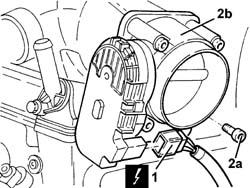

1056B17 THROTTLE CASING WITH D.V.L. - R.R.
- Path
- Procedures > 10 ENGINE > 1056 PETROL FUEL INJECTION SYSTEM > 1056B MULTI-POINT INJECTION SYSTEM (MPI) > 1056B17 THROTTLE CASING WITH D.V.L. - R.R.
- Kind
- repair procedure (removal / refitting; the operation number is the code)
- Applies to
- engines: 3.0 V6, 3.2 V6; all production periods
- Interactive page
- https://sloeber94.github.io/elrnDB-lThss/en/#/214204
Applies to: engines: 3.0 V6, 3.2 V6; all production periods
 Removing
Removing
 Refitting
RefittingSee in Op. 5530B10 BATTERY - R.R.
- Make sure that the ignition key is in the OFF position, then disconnect the negative battery terminal (-).
- [7040D12]
- [7040D14]
See in Op. 7040D50 ENGINE COMPARTMENT UPPER SOUND INSULATION SHIELD - R.R.
See in Op. 1048A28 vacuum air circuit resonator pipe - r+r
1. Disconnect the electrical connection from the throttle casing with D.V.L.
 | Description | Connector |
|---|---|---|
1 | Integrated throttle casing actuator | N075 |
2. Undo the bolts (2a) and remove the throttle casing with D.V.L. (2b) complete with gasket.

Applies to: engines: 3.0 V6, 3.2 V6; all production periods
Refitting
Removing- Fit the throttle casing with D.V.L. complete with gasket and secure it tightening the bolts to the recommended torque.
 | Value - daNm | Fastening | Component | Ø |
|---|---|---|---|---|
. | (Air chamber side) 0.8 - 1.1 | Bolt | BUTTERFLY VALVE CASE/S (MPI) | M6 |
- Connect the electrical connection to the throttle casing with D.V.L.
| Description | Connector |
|---|---|---|
. | Integrated throttle casing actuator | N075 |
See in Op. 1048A28 vacuum air circuit resonator pipe - r+r
See in Op. 7040D50 ENGINE COMPARTMENT UPPER SOUND INSULATION SHIELD - R.R.
- [7040D14]
- [7040D12]
- Connect the negative battery terminal.
Topics linked from this page (3)
- 1048A28 vacuum air circuit resonator pipe - r+r
- 5530B10 BATTERY - R.R.
- 7040D50 ENGINE COMPARTMENT UPPER SOUND INSULATION SHIELD - R.R.